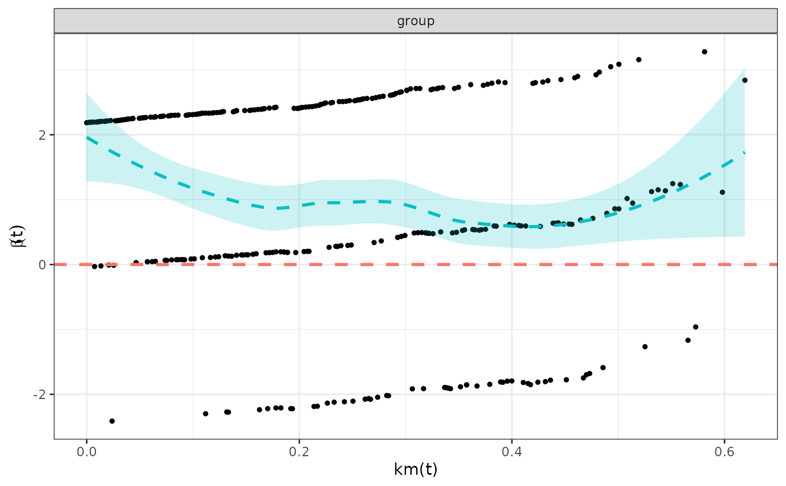
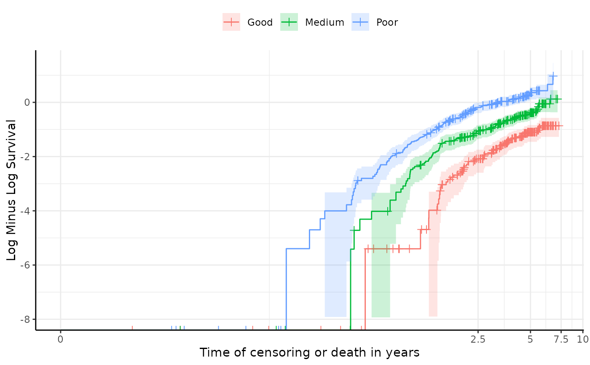

Assesses the proportional hazards assumption for survival data using a Cox proportional hazards model and related tests.
Usage
test_ph(data, time, event, group, plot_theme = theme_easysurv())Arguments
- data
A data frame containing the survival data.
- time
The name of the column in
datacontaining the time-to-event information.- event
The name of the column in
dataindicating whether the event of interest occurred.- group
The name of the column in
datadefining the grouping variable.- plot_theme
The theme to be used for the plots.
Value
A list containing plots and test results related to the assessment of the proportional hazards assumption.
- cloglog_plot
A plot of the log cumulative hazard function. If the lines are roughly parallel, this suggests that the proportional hazards assumption holds."
- coxph_model
The coefficients from the Cox proportional hazards model. The exp(coef) column shows the hazard ratio.
- survdiff
The results of the log-rank test for differences in survival curves between groups. A p-value less than 0.05 suggests that survival differences between groups are statistically significant.
- coxph_test
The results of the proportional hazards assumption test. A p-value less than 0.05 suggests that the proportional hazards assumption may be violated.
- schoenfeld_plot
A plot of the Schoenfeld residuals. A flat smoothed line close to zero supports the proportional hazards assumption. A non-flat smoothed line with a trend suggests the proportional hazards assumption is violated.
Examples
ph_results <- test_ph(
data = easysurv::easy_bc,
time = "recyrs",
event = "censrec",
group = "group"
)
ph_results
#>
#> ── Testing Survival Curve Differences ──────────────────────────────────────────
#> ℹ `survival::survdiff()` found a p-value of 0.
#> ✔ suggests survival differences between groups are statistically significant.
#>
#> ── Testing Proportional Hazards Assumption ─────────────────────────────────────
#>
#> ── Cox Proportional Hazards Model ──
#>
#> `survival::coxph()` output:
#>
#> coef exp(coef) se(coef) z Pr(>|z|)
#> groupMedium 0.8401002 2.316599 0.1713926 4.901613 9.505295e-07
#> groupPoor 1.6180720 5.043358 0.1645443 9.833656 8.063728e-23
#>
#> The exp(coef) column shows the hazard ratios were 2.317 and 5.043.
#>
#> ℹ `survival::cox.zph()` found a p-value of 0.017.
#> ! suggests the PH assumption may not be valid.
#>
#> ── Plots ──
#>
#> ℹ Schoenfeld residuals and log cumulative hazard plots have been printed.
#> ℹ PH tests may not always agree, so consider the results of all tests and plots in totality.
#> ────────────────────────────────────────────────────────────────────────────────
#> → For more information, run `View()` on saved `test_ph()` output.

